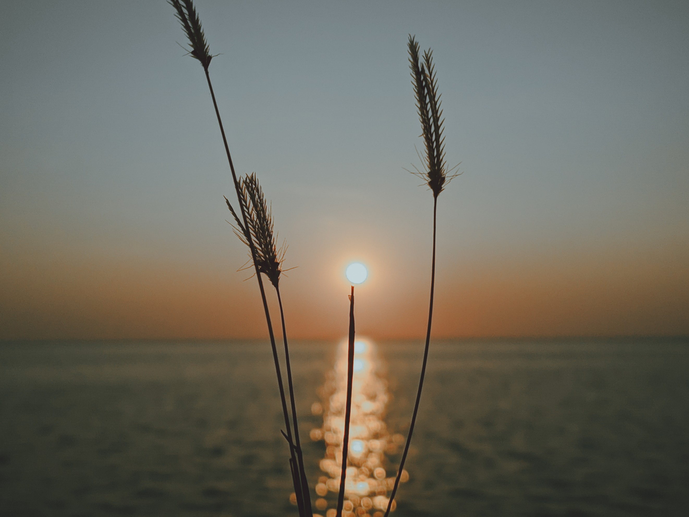

This is my entry when I joined an online contest where many people participated. The contest was about how we take picture without more subject around and how we enhance it with proper dynamics and color combination. I was just surprised to be included in the top 5 final list joined by over 100+ people. Although I'm not the winner but getting into the top 5 was a great achievement for me. And this is what came to my mind the moment you beat, don't be afraid to try because there is always a way to win.
 I believe in saying “In photography there is a reality so subtle that it becomes more real than reality.”
I created this website to serve as an inspiration to everyone to share what you have like a preset, nice shoots, and your experienced when Joining photography contest. All my pictures are just taken with a mobile phone and enhanced using Lightroom, Inshot, PicsArt and Snapseed. But I usually use lightroom because I'm more on filter and not Photo Manipulation. I've done a lot of filters and already share it to facebook lightroom group and credited many times.